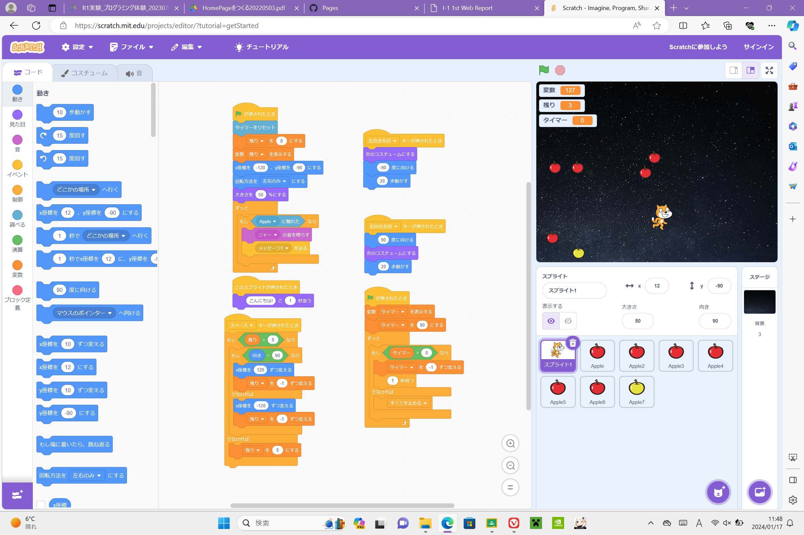

1-2 ゲーム

1.内容
落ちてくるリンゴを拾うゲーム。赤いリンゴは拾うと1点、金のリンゴは拾うと3点が加算される。制限時間は90秒であり、赤いリンゴは1/2で一秒加算金のリンゴは二秒加算になる。また、ゲーム中8回まで向いている方向に高速移動することができ、金のリンゴを拾うと使用回数が一回加算される。
2.感想
スクラッチは何回も使用したことがあるので授業内容より少し複雑なプログラムにした。またタイマーを変数を使うことで表現し、猫の動きが物足りなかったため回数を限定して特別な行動がとれるようにした